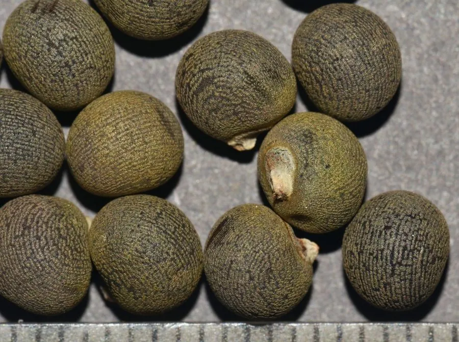

农作物与经济植物 · 植物界
秋葵 Abelmoschus esculentus

秋葵的嫩荚含黏液、口感脆滑，可炒食、凉拌、蘸酱和做汤，富含膳食纤维，是夏秋季节的特色蔬菜。
- 分类
- 门被子植物门纲双子叶植物纲目锦葵目科锦葵科属秋葵属
- 栖息环境
- 温暖湿润的菜地，喜光照充足、疏松排水良好土壤
- 地理分布
- 原产非洲东北部与印度一带，现中国南方、南亚、非洲广泛栽培
- 保护级别
- 暂无评估（栽培作物）
物种志
秋葵是一年生草本，株高 1–2 m，茎直立，有毛。叶片大，掌状 5–7 裂，边缘有锯齿。花单生叶腋，花冠黄色，中心暗红色，五瓣，花大而美。果实为蒴果，长条状，有 5–10 条棱，嫩时绿色或红色，内含许多球形种子；嫩荚富含黏液。
秋葵原产非洲东北部与印度一带，栽培历史悠久，如今在热带、亚热带广泛种植，中国南方栽培较多。它喜温暖、光照充足，不耐霜冻，适宜在疏松肥沃、排水良好的土壤中种植。嫩荚可炒食、凉拌、蘸酱、做汤、天妇罗，口感脆滑，黏液来自果胶和多糖；老熟果实不可食，但种子可榨油或作咖啡代用品。秋葵富含膳食纤维、维生素 C 和钙，是夏秋特色蔬菜。
形态与习性
- 株高1–2 m
- 花黄色，中心暗红色，大而美
- 果实蒴果，长条有棱
- 嫩荚含黏液，口感脆滑
- 营养富含膳食纤维、维生素 C 与钙
趣味知识
- 秋葵的花大而美，黄色花瓣中心是暗红色的。
- 秋葵嫩荚的黏液来自果胶和多糖，是它的特色。
- 老熟的秋葵荚不能吃，但种子可榨油或作咖啡代用品。